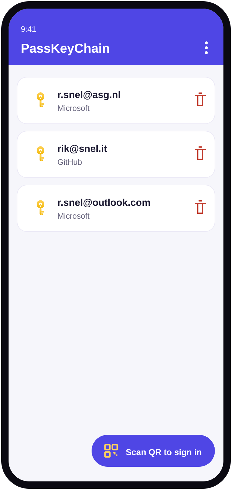
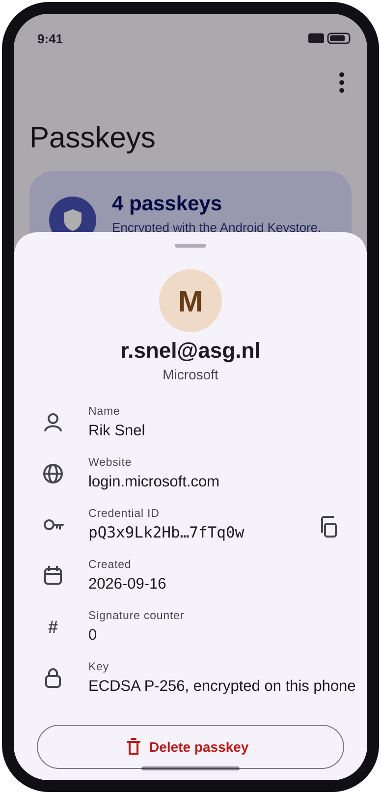
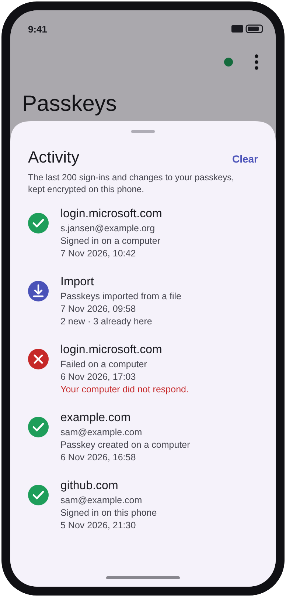
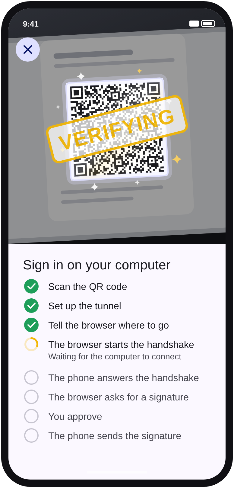
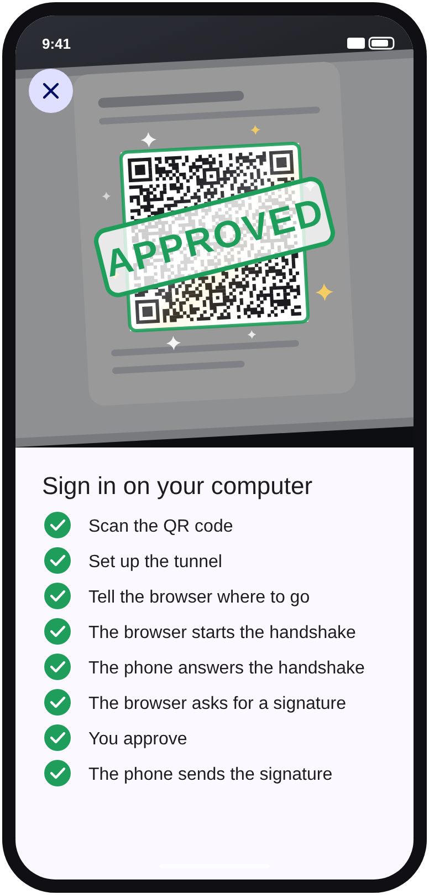
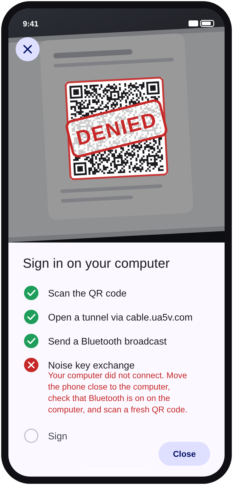
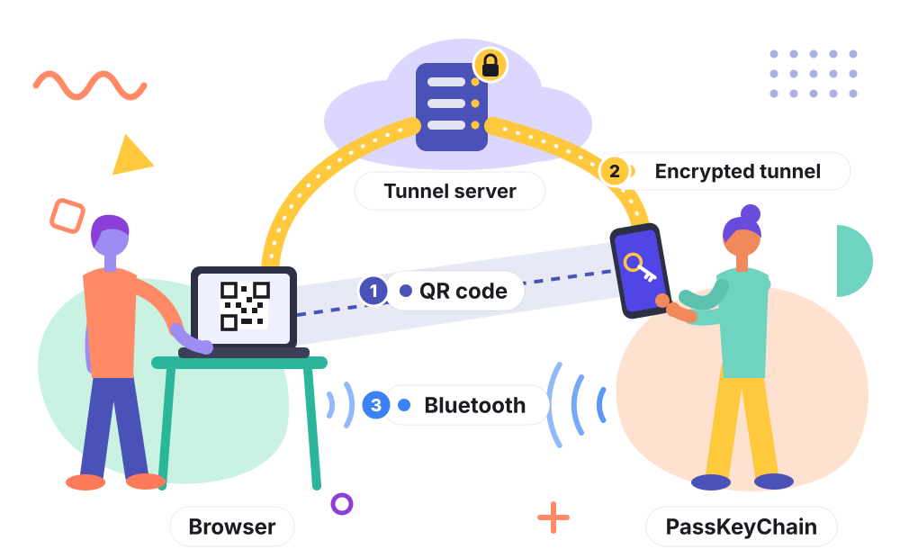

PassKeyChain imports FIDO2 passkeys from a Bitwarden export, keeps the private keys in Android Keystore-encrypted storage, and signs you in with them: on your computer by scanning its sign-in QR code, and on your phone as a passkey provider.
A self-hosted passkey manager — you hold the keys, not a cloud vendor.
Reads the passkeys from a Bitwarden JSON export (fido2Credentials), including password-protected encrypted exports, and from the FIDO Credential Exchange Format, also straight from another app through Android’s credential transfer.
Credentials are sealed with an AES-256-GCM key held in the Android Keystore — hardware-backed / StrongBox where the device supports it.
Registers as a system passkey provider (Android 14+), so imported keys are offered when you log in to sites and apps on the phone.
Scan the QR code a computer shows when it asks for a passkey, and PassKeyChain completes the sign-in over Bluetooth and an encrypted tunnel. Tested with a real Microsoft sign-in. A site’s “create a passkey” code makes a new passkey on the phone. How QR sign-in works →
Exports in Bitwarden’s format, encrypted with a password if you like, so you can import them back into Bitwarden. No lock-in — your credentials move with you.
Checks GitHub for a newer version and installs it in place. A short, encrypted sign-in history shows what signed in where, and when.
🔒 Security & scope. PassKeyChain manages credentials you already own. Private keys never leave your device; there is no server and no telemetry. Passkey portability follows the FIDO Alliance Credential Exchange direction (2025). Exports can be encrypted with a password in Bitwarden’s format; treat an unencrypted export like any password-vault backup.
Material 3, with Material You colors on Android 12 and newer. (Renderings of the current build.)

Your passkeys, grouped per website.

Details, copy and delete (with undo).

Sign-in history: what signed in where, and when.

Scanned: verifying while the computer connects.

Approved: you are signed in on the computer.

Denied, with what went wrong and what to do.
Three steps, no account, no server.
Export your vault from Bitwarden as JSON (preferably “Encrypted”, “Password protected”), open it in PassKeyChain, then delete the export file. Keys are normalised and encrypted into Keystore-backed storage.
On the phone, pick PassKeyChain from the system passkey sheet. On another device, tap Scan QR and point at the sign-in page’s QR.
The app checks for the newest debug build of main and offers it in place. Export whenever you want a backup.
When a website asks your computer for a passkey that lives on your phone, the computer shows a QR code. You scan it, and a few seconds later you are signed in on the computer, without the private key ever leaving your phone. This is what happens in between.

The QR holds a one-time public key of the browser and a random secret. The phone reads it with its camera, and from that secret both sides compute the same set of keys. The secret itself never travels over the internet.
Phone and computer are often not on the same network, so they meet at a relay on the internet: the tunnel server (for Android phones it is run by Google). The phone connects first and reserves a “meeting room”.
The phone sends a short Bluetooth broadcast, encrypted with the keys from the QR, saying which tunnel server and which meeting room to use. Only the computer that showed the QR can read it, and only when it is close by.
The computer connects to the same meeting room and sends the first message of a cryptographic handshake, built from the keys of step 1.
The phone answers. Both sides now share fresh session keys, and everything after this is encrypted end to end. The tunnel server only passes along data it cannot read.
It sends the name of the website and a random challenge from that website. The phone finds the passkey for that website and asks you to unlock, with your fingerprint or PIN.
The phone signs the challenge with the passkey’s private key. The browser hands the signature to the website, which checks it with the public key it saved when you created the passkey. You are signed in, and the private key never left your phone.
Without the Bluetooth step the browser never learns where to connect. A fake website that shows a real QR to someone far away gets nowhere.
The tunnel server only forwards encrypted data. It cannot read the challenge, the signature or anything else.
The browser only asks for a signature for the website you are actually on, and the signature covers that website’s name, so a look-alike site cannot use it.
This is the FIDO “hybrid” transport, the same protocol Android phones and iPhones use for this. PassKeyChain does all seven steps itself, in about 1000 lines of Kotlin, and has signed in to a Microsoft account this way.